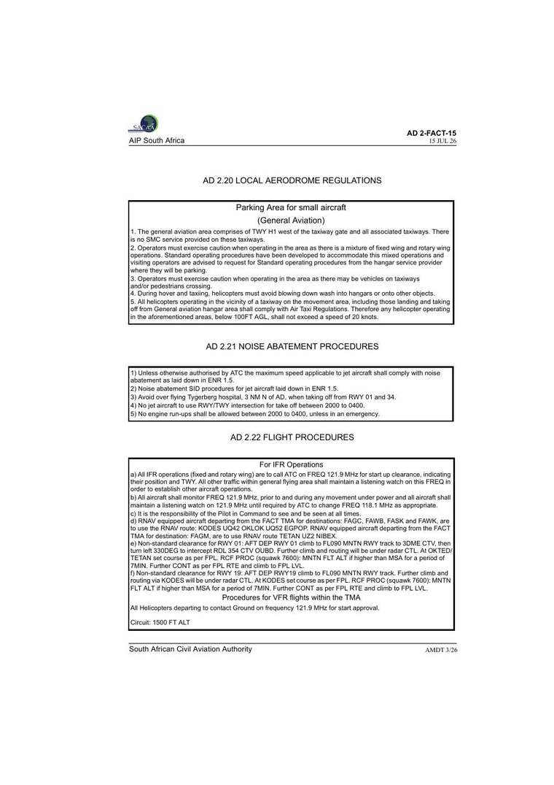

Photo: BlogDeBanderas · CC BY-SA 4.0
Photo: BlogDeBanderas · CC BY-SA 4.0FACT
RWY 01 into wind · VFR · your minimums example
Wind›head 14 · cross 4 · RWY 01
QNH›METAR 13:00Z · 35 min ago
Next 3 h›TAF: 340/15 to 18:00 · VFR
13-h model›not loaded · refreshed every 6 h
Runways›3201 m and 1701 m · 20-row tables
Tower›ATIS 127.6 · GND 121.9 · 9 AIP + 8 OA
Density alt›ref temp 22.2 °C
Charts›Aerodrome 1 · Ground 5 · ARR 6 · APP 5 · Other 13
AIP pages›AD 2-FACT · AMDT 1/26 · PDF
References›GEN · ENR · AD sections · 5 documents
NOTAMs & SUP›S075-26 valid to 17 Mar 2027 · NOTAM links
Fuel & hours›H24 · PPR rules · lighting
Traffic›7 dep · 5 arr · ≤150 NM example
Light›sunset · moon 74 % new
Flight schools›on field + nearby
Examiners›DFEs · Western Cape
Field›ICAO/IATA · FIR · position · map · contact
MT feature
MT feature
Can I go?
✕Go, with one supplement to read.
Verdict, minimums, notices, density altitude and light, before anything else.
Can I go? iGO
- Light-aircraft suitability i
- C172 / student guide
- Status (METAR)
- GO
- Best runway
- RWY 01 · crosswind 4 kt (limit 15)
- Your minimums
- GO ≥ 5 km · ≥ 1500 ft · < 25 kt Edit ⚙
Before you go 1 SUP
Density altitude computed
Light new example
Weather
✕Northwesterly 14 knots, CAVOK by four.
Observed and forecast first; the model only when you ask for it.
Next three hours METAR + TAFexample
FM301900 35012KT 9999 BKN030
FM310900 33018KT 9999 FEW030
TEMPO 3022/3024 2000 BR BKN006
The day ahead · 13 h model
06:30 · 12:30 · 18:30 · 00:30 SAST · blends from TAF over hour 1
- Model now
- 330°/13 kt · G18 · ≥10 km · cloud 12 % (low 4 %) · 19°/9° · MSL 1016 · valid 13:00Z
Windy weather map i
Runways & ground
✕Two runways, 01 is into wind.
Runways drawn to scale, declared distances, taxi charts and local rules.
01/19in use · 01
Full AD 2.12–2.14 table
| RWY 01 | RWY 19 | |
|---|---|---|
| Bearing | 345°T · 012°M | 165°T · 192°M |
| THR elev | 144 ft | 147 ft |
| TDZ elev | 144 ft | 147 ft |
| Slope | +0.03 % | −0.03 % |
| TORA | 3201 m | 3201 m |
| TODA | 3530 m | 3441 m |
| ASDA | 3201 m | 3201 m |
| LDA | 3201 m | 3201 m |
| Stopway | NIL | NIL |
| Clearway | 329 × 61 m | 240 × 61 m |
| Strip | 3322 × 300 m | 3322 × 300 m |
| RESA | 240 × 120 m | 190 × 120 m |
| Approach | PALS CAT III | PALS CAT II |
| THR lights | Green | Green |
| PAPI | 3° | 3.2° |
| TDZ lights | 600 m | 600 m |
| Centre-line | 3200 m · 15 m · white, last 600 m red | 3200 m · 15 m · white, last 600 m red |
| Edge | 3201 m · 60 m · white, last 600 m yellow | 3201 m · 60 m · white, last 600 m yellow |
| End | Red | Red |
| Threshold | 33°59′15.86″S 018°36′32.01″E | 33°57′35.43″S 018°36′00.18″E |
16/34secondary
Full AD 2.12–2.14 table
| RWY 16 | RWY 34 | |
|---|---|---|
| Bearing | 135°T · 162°M | 315°T · 342°M |
| THR elev | 143 ft | — |
| TDZ elev | n/a | n/a |
| Slope | +0.14 % | −0.14 % |
| TORA | 1701 m | 1701 m |
| TODA | 1701 m | 1701 m |
| ASDA | 1701 m | 1701 m |
| LDA | 1701 m | 1701 m |
| Stopway | NIL | NIL |
| Clearway | NIL | NIL |
| Strip | 1820 × 150 m | 1820 × 150 m |
| RESA | NIL INFO AVBL | NIL INFO AVBL |
| Approach | NIL | NIL |
| THR lights | Green | Green |
| PAPI | 3° LHS | 3° LHS |
| TDZ lights | NIL | NIL |
| Centre-line | NIL | NIL |
| Edge | 1701 m · 60 m · white, last 600 m yellow | 1701 m · 60 m · white, last 600 m yellow |
| End | Red | Red |
| Threshold | 33°57′40.96″S 018°35′50.89″E | (AD 2.12) |
Ground charts 6
On the ground
Air & radio
✕Talk to Tower on 118.1.
Radio in the order you call, circuit, arrival and approach plates, lighting and live traffic.
Radio, in call order
OurAirports list (8)
Circuit
- Altitude
- 1500 ft ALT
- Direction
- Not stated in AIP
Runway lighting AD 2.14 / 2.15
Arrivals, approaches & other 24
Procedures & noise
Live traffic adsb.lolexample
The field
✕Fuel, hours, people.
Everything about the place itself: facilities, contacts, schools and examiners, the photo and the map.
Field facts
- ICAO / IATA
- FACT / CPT
- Elevation
- 151 ft
- Category
- International
- FIR
- Cape Town (FACA)
- Position
- 33°58′S 018°36′E
- Mag var
- 27° W
SACAA AIP AD 2 FACT (AMDT 1/26) and OurAirports

Photo: BlogDeBanderas · CC BY-SA 4.0Map
Fuel & services AD 2.3 / 2.4
Hours & PPR AD 2.3
Contact & landing fees AD 2.2
Additional information
Flight schools at FACT 6 on field
Civair Training (Pty) Ltd SACAA/1116/ATO · Valid exp 31/08/2027 · 19 ratings
Cape Town International Airport (FACT) (named in SACAA address) · General Aviation Area
no email, phone or website published in the SACAA ATO register · Address match: address names "cape town … airport/aerodrome"
Class Rating - MEA (L) · Class Rating - SEA (L) · Class Rating - SEH · CPL - (Modular - A) · CPL - (Modular - H) · Crew Resource Management (Pilot) · Examination Centre · Flight Instructor (A) · Flight Instructor (H) · Helicopter game or livestock cull rating · Helicopter sling load rating · Instrument Rating (H) · Instrument Rating (A) · Night Rating (A) · Night Rating (H) · PPL (A) · PPL (H) · Radio Telephony (General) · Radio Telephony (Restricted)
Deal Alliance Aviation Training SACAA/1550/ATO · Valid exp 30/06/2027 · 11 ratings
Cape Town International Airport (FACT) (named in SACAA address)
no email, phone or website published in the SACAA ATO register · Address match: address names "cape town … airport/aerodrome"
Crew Resource Management (Pilot) · GNSS · Language Proficiency · PBN · Quality Assurance Course · Radio Telephony (General) · Radio Telephony (Restricted) · RVSM · Safety and Emergency Procedure Training · Safety Management Systems · Train the Trainer
FANTINI AVIATION FTS SACAA/1657/ATO · Valid exp 31/10/2030 · 12 ratings
Cape Town International Airport (FACT) (named in SACAA address)
no email, phone or website published in the SACAA ATO register · Address match: address names "cape town … airport/aerodrome"
Class Rating - MEA (L) · Class Rating - SEA (L) · CPL - (Modular - A) · Crew Resource Management (Pilot) · Flight Instructor (A) · Instrument Rating (A) · Language Proficiency · Night Rating (A) · NPL - Light sport aeroplanes · PPL (A) · Radio Telephony (Restricted) · Type Rating - For aircraft considered necessary by the Director
Overberg Aviation Services (Pty) Ltd SACAA/1601/ATO · Valid exp 31/08/2029 · 16 ratings
Cape Town International Airport (FACT) (named in SACAA address)
no email, phone or website published in the SACAA ATO register · Address match: address names "cape town … airport/aerodrome"
Class Rating - MEA (L) · Class Rating - MEH · Class Rating - SEA (L) · Class Rating - SEH · CPL - (Modular - A) · CPL - (Modular - H) · Flight Instructor (A) · Flight Instructor (H) · Helicopter sling load rating · Instrument Rating (H) · Instrument Rating (A) · MCC - (A) · Night Rating (A) · Night Rating (H) · PPL (A) · PPL (H)
SA Red Cross Air Mercy Service Trust SACAA/1513/ATO · Valid exp 30/11/2029 · 8 ratings
Cape Town International Airport (FACT) (named in SACAA address) · General Aviation Area
no email, phone or website published in the SACAA ATO register · Address match: address names "cape town … airport/aerodrome"
Class Rating - SEA (L) · Class Rating - SEH · Crew Resource Management (Pilot) · GNSS · Helicopter sling load rating · Helicopter winching rating · NVG (H) · Type Rating - Turbojet and turbofan powered aeroplanes
Ultimax Aviation (Pty) Ltd SACAA/1613/ATO · Valid exp 31/03/2029 · 8 ratings
Cape Town International Airport (FACT) (named in SACAA address) · General Aviation Area
no email, phone or website published in the SACAA ATO register · Address match: address names "cape town … airport/aerodrome"
Airbus EC 130 (Cat A and Cat C) · Arriel 1 Series (Cat C) · Arriel 2 Series (Cat C) · Arrius 2F Series (Cat C) · AS 350/H125 Series (Cat A and Cat C) · AS365/EC155 SERIES CAT A and C · EC 120/H120 Series (Cat A and Cat C) · EC 135 SERIES CAT A and C
Flight examiners · Western Cape 18
Andre Nicolaas Janse Van Rensburg DFE 1 (A) · Valid · exp 31/03/2027 · cat A · 49 types
Aeronca Champion Airbus A-319-100 series Airbus A-320 Airbus A-340-200 series Airbus A-340-300 series Airbus A-340-500 series Airbus A-340-600 series ATR 42 BEECH 76 Duchess Bellanca Champion Citabria BELLENCA/EAGLE DW-1 Eagle BOEING 777 200 series BOEING 777 …
Bruce Hyde DFE 1 (A) · Valid · exp 31/07/2027 · cat A · 43 types
BAe - 4100 Jetstream BEECH 200, 1300 Super King Air, Commuter (Huron) BEECH 76 Duchess BEECH 90/A90/C90/E90 King Air BEECH Baron 55 BEECH Bonanza 36 Bellanca Decathlon BOEING 737 400 series BOEING 737 500 series BOEING 737 800 series, BBJ2 BOEING 737-200 CESSN…
Bruce Arthur Scott DFE 1 (A) · Valid · exp 30/11/2026 · cat A · 68 types
American AA-5 Traveler,Cheetah,Tiger Atlas AL-60C-4M Kudu BEECH 200, 1300 Super King Air, Commuter (Huron) BEECH 33 Debonair/Bonanza BEECH 35 Bonanza BEECH 90/A90/C90/E90 King Air BEECH Baron 55 BEECH Baron 58 BEECH Bonanza 36 Beech F90 King Air Canadair Chall…
Christiaan Frederik Willem Booysen DFE 1 (A) · Valid · exp 30/06/2027 · cat A · 20 types
BEECH Baron 58 BOEING 737 300 series BOEING 737 400 series BOEING 737 800 series, BBJ2 BOEING 737-200 Boeing 737-8 CESSNA 172 Skyhawk, Cutlass, HawkXP, Reims Rocket CESSNA 208 Caravan CESSNA 210 CL600-2B19 - CRJ-100 CL600-2B19 - CRJ-200 CL600-2C10 - CRJ-700 CL…
Christoffel Johannes Odendaal DFE 1 (A) · Valid · exp 31/08/2027 · cat A · 43 types
Aerostar 200, 201, 202, 220 Beech 1900 BEECH 35 Bonanza BEECH 76 Duchess BEECH Baron 55 BEECH Baron 58 BOEING 737 400 series BOEING 737 800 series, BBJ2 Boeing 737-8 CESSNA 150 CESSNA 152 Cessna 172 RG Cutlass RG CESSNA 172 Skyhawk, Cutlass, HawkXP, Reims Rock…
Dietlind Lempp DFE 1 (A) · Valid · exp 31/03/2027 · cat A · 71 types
AEROPRAKT A-22 / Foxbat / Sharoik / Valor / Vision Aerostar 600/601, PIPER P-60, Aerostar, Superstar American AA-1 Yankee, Trainer, Tr2 American AA-5 Traveler,Cheetah,Tiger BEECH 33 Debonair/Bonanza BEECH 35 Bonanza BEECH 90/A90/C90/E90 King Air BEECH 95 Trave…
Frederik Van Zyl Le Roux DFE 1 (A) · Valid · exp 30/11/2026 · cat A · 21 types
BAe - 4100 Jetstream Beech Baron 58 Cessna 210 CESSNA 150 CESSNA 172 Skyhawk, Cutlass, HawkXP, Reims Rocket CESSNA 205 CESSNA 206 Stationair, Super Skywagon CESSNA 208 Caravan Embraer EMB-135 Series/ ERJ-135/140 Embraer EMB-145 Series/ ERJ-145 Series ERJ 190-1…
Gavin Andre Durr DFE 3 (A) · Valid · exp 31/12/2026 · cat A · 28 types
Airbus A-319-100 series Airbus A-320 Airbus A-330-200 series Airbus A-340-200 series Airbus A-340-300 series Airbus A-340-500 series Airbus A-340-600 series Airbus A330-300 series BEECH / RAYTHEON Super King Air (300) BEECH 200, 1300 Super King Air, Commuter (…
Gerhard Albertus Uys DFE 3 (H) · Valid · exp 28/02/2027 · cat H · 34 types
Agusta A119 KOALA AS-350/550 Ecureuil, AStar, SuperStar, Fennec BEECH 200, 1300 Super King Air, Commuter (Huron) BEECH 76 Duchess BEECH Baron 55 BEECH Baron 58 BELL 204/205/210 (Agusta / Dornier/Huey) Bell 407 Bell Iroquois 212/412 Bell-205 Bell/Agusta 206 Jet…
Giovanni Human DFE 1 (A) · Valid · exp 31/03/2027 · cat A · 86 types
7EC Champ,7ECA/7GC Citabria,8KCAB Decathlon/Super Decathlon 7GCAA/GCBC/7KCAB Citabria Adventure/Explorer A-1 HUSKY Aeronca Champion AUSTER/TAYLORCRAFT Auster 5 Alpha, Auster 5, J Beech 1900 BEECH 200, 1300 Super King Air, Commuter (Huron) BEECH 76 Duchess BEEC…
Ian Rattray Jackson DFE 1 (A) · Valid · exp 31/01/2027 · cat A · 41 types
Airbus A-319-100 series Airbus A-320 Airbus A-321 Airbus A-330-200 series Airbus A-340-200 series Airbus A-340-300 series Airbus A-340-500 series Airbus A-340-600 series Airbus A330-300 series Beech 1900 BEECH 200, 1300 Super King Air, Commuter (Huron) BEECH 9…
Nicolaas Vallentgoed DFE 1 (A) · Valid · exp 30/04/2027 · cat H · 109 types
Aerostar Agusta A109 A II/C/K2/LUH/E/S/SP/ENS Agusta A119 KOALA Agusta NH-500/ HUGHES 500 Airbus A-300 Airbus A-330-200 series Airbus A-340-200 series Airbus A-340-300 series Airbus A-340-500 series Airbus A-340-600 series Airbus A330-300 series AS-332/532 Sup…
Richard Alan Steveni Thornton DFE 3 (A) · Valid · exp 31/03/2027 · cat A · 32 types
Airbus A-320 BEECH 23 Sundowner BEECH 33 Debonair/Bonanza BEECH 76 Duchess BEECH Baron 55 BEECH Baron 58 Bombardier BD-700 Global Express CESSNA 150 CESSNA 172 Skyhawk, Cutlass, HawkXP, Reims Rocket CESSNA 177, Cardinal CESSNA 206 Stationair, Super Skywagon CE…
Roedolf Johannes De Lange DFE 1 (H) · Valid · exp 31/01/2027 · cat H · 16 types
Agusta A109 A II/C/K2/LUH/E/S/SP/ENS AS-350/550 Ecureuil, AStar, SuperStar, Fennec BELL 204/205/210 (Agusta / Dornier/Huey) Bell 407 Bell 427 Bell/Agusta 206 JetRanger/LongRanger/SeaRanger Enstrom 480 TH-28 Eurocopter EC-130 Eurocopter EC-145 Eurocopter/Kawasa…
Stefan Fouche DFE 1 (H) · Valid · exp 30/11/2026 · cat H · 18 types
Agusta NH-500/ HUGHES 500 AS-332/532 Super Puma,Tiger,Cougar(Hkp10) Augusta A1C/A109AII/C/K2/LUH Bell 230 Bell 407 Bell- 222, 230,430 Bell/Agusta 206 JetRanger/LongRanger/SeaRanger BO-105 Cabri / G-2 Cabri Eurocopter EC-225/725 MEH (LAND) Robinson R-22 Robinso…
Terence Pierre Chaplin DFE 1 (A) · Valid · exp 28/02/2027 · cat H · 46 types
Airbus A-319-100 series Airbus A-321 Airbus A-330 Airbus A-340-200 series Airbus A-340-300 series Airbus A-340-500 series Airbus A-340-600 series Airbus A320-100/200 series AS-332/532 Super Puma,Tiger,Cougar(Hkp10) AS-350/550 Ecureuil, AStar, SuperStar, Fennec…
Trevor Michael Watkins DFE 1 (A) · Valid · exp 31/03/2027 · cat A · 22 types
Airbus A-340-200 series Airbus A-340-300 series Airbus A-340-500 series Airbus A-340-600 series BEECH 200, 1300 Super King Air, Commuter (Huron) BEECH 95 Travelair BOEING 737 300 series BOEING 737 400 series BOEING 737 500 series BOEING 737 800 series, BBJ2 BO…
Walter Howard Waldeck DFE 1 (A) · Valid · exp 30/04/2027 · cat A · 132 types
Airbus A-300 Airbus A-330-200 series Airbus A-340-200 series Airbus A-340-300 series Airbus A-340-500 series Airbus A-340-600 series Airbus A330-300 series Airbus A350-900 Series American AA-1 Yankee, Trainer, Tr2 American AA-5 Traveler,Cheetah,Tiger Beagle Pu…
Nearby · same town 24 fuzzy match
1st Flight (Pty) Ltd SACAA/0048/DTO · Valid exp 31/03/2031 · 21 ratings
Base aerodrome not stated in SACAA address
no email, phone or website published in the SACAA ATO register · Fuzzy match: same town as aerodrome ("Cape Town")
CCM Instructor Grade A · CCM Instructor Grade B · CCM Instructor Grade C · Conventionally Controlled Microlight - Land · Conventionally Controlled Microlight Aeroplane · Examination Centre · Light Sport Aeroplane · LSA Instructor Grade A · LSA Instructor Grade B · LSA Instructor Grade C · NPL - Class Rating (Touring motor gliders) · NPL - National FI Rating - Touring Motor Gliders - Grade A · NPL - National FI Rating - Touring Motor Gliders - Grade B · NPL - National FI Rating - Touring Motor Gliders - Grade C · NPL - Touring motor gliders · NPL - Type Rating (By name for each touring motor glider) · WCM Instructor Grade A · WCM Instructor Grade B · WCM Instructor Grade C · Weight-Shift Controlled Microlight Aeroplane - Student · Weight-Shift Controlled Microlight Aeroplane
4 Aviators SACAA/1013/ATO · Valid exp 31/03/2029 · 24 ratings
Base aerodrome not stated in SACAA address
no email, phone or website published in the SACAA ATO register · Fuzzy match: same town as aerodrome ("Cape Town")
Class Rating - MEA (L) · Class Rating - MEA (L) · Class Rating - SEA (L) · Class Rating - SEA (L) · CPL - (Modular - A) · CPL - (Modular - A) · ELP · Examination Centre · Flight Instructor (A) · Flight Instructor (A) · FSTD IOS (A) · Instrument Rating (A) · Instrument Rating (A) · Language Proficiency · Language Proficiency · Night Rating (A) · Night Rating (A) · NPL - Class Rating (Conventionally controlled microlight aeroplanes, land) · PPL (A) · PPL (A) · Radio Telephony (General) · Radio Telephony (General) · Radio Telephony (Restricted) · Radio Telephony (Restricted)
4 Aviators SACAA/1652/ATO · Valid exp 31/03/2029 · 24 ratings
Base aerodrome not stated in SACAA address
no email, phone or website published in the SACAA ATO register · Fuzzy match: same town as aerodrome ("Cape Town")
Class Rating - MEA (L) · Class Rating - MEA (L) · Class Rating - SEA (L) · Class Rating - SEA (L) · CPL - (Modular - A) · CPL - (Modular - A) · ELP · Examination Centre · Flight Instructor (A) · Flight Instructor (A) · FSTD IOS (A) · Instrument Rating (A) · Instrument Rating (A) · Language Proficiency · Language Proficiency · Night Rating (A) · Night Rating (A) · NPL - Class Rating (Conventionally controlled microlight aeroplanes, land) · PPL (A) · PPL (A) · Radio Telephony (General) · Radio Telephony (General) · Radio Telephony (Restricted) · Radio Telephony (Restricted)
AutonoSky (Pty) Ltd SACAA/1623/ATO · Valid exp 30/06/2029 · 10 ratings
Base aerodrome not stated in SACAA address
no email, phone or website published in the SACAA ATO register · Fuzzy match: same town as aerodrome ("Cape Town")
Base Station Training · Examination Centre · Radio Telephony (Restricted) · RPAS (Flight Training) · RPAS (Ground School) · RPC - Instructor Rating · RPC (A) - B-VLOS · RPC (A) - VLOS · RPC (MR) - B-VLOS · RPC (MR) - VLOS
Avtech Africa CC SACAA/1517/ATO · Valid exp 31/10/2027 · 36 ratings
Base aerodrome not stated in SACAA address
no email, phone or website published in the SACAA ATO register · Fuzzy match: same town as aerodrome ("Cape Town")
Aerospatiale SA 330 Puma (Cat A and Cat C) · Agusta Westland 139 Series (Cat A and Cat C) · Airbus EC 130 (Cat A and Cat C) · Aircraft Avionics General (Cat X ) · Aircraft Composite General (Cat B) · Aircraft Electric General (Cat X) · Aircraft Instrument General (Cat X) · Airframe General (Cat A) · Alouette III (Cat A and Cat C) · Artouste 3B Series (Cat C) · AS 350 Series (Cat A and C) · Augusta Westland AW 119 (Cat A and Cat C) · Avionics Equipment (Cat X) · Bell 206 Series (Cat A and Cat C) · Bell 212 Series (Cat A and Cat C) · Bell 407 (Cat A & Cat C) · Bell 412 Series (Cat A) · Cessna 100 Series (Cat A) · Cessna 200 Series (Cat A) · Civil Aviation Regulations (AME) · Corrosion Control, Inspection and Protections · Electrical Equipment (Cat X) · Gas Turbine Engine General (Cat C) · Human Factors · Instrument Equipment (Cat X) · Lycoming 235, 320,360 and 540 Series ( Cat C) · Lycoming IO 360 and IO 540 (Cat A and cat C) · Pilatus PC 12 Series (Cat A) · Piston Engine General (Cat C) · Pratt &Whitney PT6 A Series (Cat C) · PWC PT6T Series (Cat C) · Robinson R22/44 Series (Cat A and Cat C) · Rotorcraft General · Sealant · Teledyne Continental 520/550 Series (Cat C) · Turbomeca Turmo III C4 Series (Cat C)
Birdmen Paragliding SACAA/0031/DTO · Valid exp 30/09/2027 · 7 ratings
Base aerodrome not stated in SACAA address
no email, phone or website published in the SACAA ATO register · Fuzzy match: same town as aerodrome ("Cape Town")
NPL - Class Rating (Paragliders, powered paragliders and powered paratrikes - Basic) · NPL - Class Rating (Paragliders, powered paragliders and powered paratrikes - Sport) · NPL - National FI Rating - Hang-gliders and paragliders - Grade B · NPL - Paragliders, including powered paragliders and powered paratrikes · NPL - Type Rating (Hang-gliders and paraglider - Type 1) · NPL - Type Rating (Hang-gliders and paraglider - Type 2) · NPL - Type Rating (Hang-gliders and paraglider - Type 3)
Cape Hope Paragliding SACAA/0058/DTO · Valid exp 29/09/2028 · 14 ratings
Base aerodrome not stated in SACAA address
no email, phone or website published in the SACAA ATO register · Fuzzy match: same town as aerodrome ("Cape Town")
NPL - Class Rating (Paragliders, powered paragliders and powered paratrikes - Basic) · NPL - Class Rating (Paragliders, powered paragliders and powered paratrikes - Sport) · NPL - National FI Rating - Hang-gliders and paragliders - Grade A · NPL - National FI Rating - Hang-gliders and paragliders - Grade B · NPL - National FI Rating - Hang-gliders and paragliders - Grade C · NPL - Paragliders, including powered paragliders and powered paratrikes · NPL - Type Rating (Hang-gliders and paraglider - Type 1) · NPL - Type Rating (Hang-gliders and paraglider - Type 2) · NPL - Type Rating (Hang-gliders and paraglider - Type 3) · NPL - Type Rating (Hang-gliders and paraglider - Type 4) · NPL - Type Rating (Hang-gliders and paraglider - Type 5) · NPL - Type Rating (Hang-gliders and paraglider - Type 6) · NPL - Type Rating (Hang-gliders and paraglider - Type 7) · VALIDATION OF NPL FOREIGN LICENCE
Cape Outdoors Tours (Pty) Ltd SACAA/0051/DTO · Valid exp 29/10/2027 · 4 ratings
Base aerodrome not stated in SACAA address
no email, phone or website published in the SACAA ATO register · Fuzzy match: same town as aerodrome ("Cape Town")
NPL - Class Rating (Paragliders, powered paragliders and powered paratrikes - Basic) · NPL - Class Rating (Paragliders, powered paragliders and powered paratrikes - Sport) · NPL - National FI Rating - Hang-gliders and paragliders - Grade B · NPL - National FI Rating - Hang-gliders and paragliders - Grade C
Cape Town International Aviation Academy NPC SACAA/1127/ATO · Valid exp 31/08/2027 · 17 ratings
Base aerodrome not stated in SACAA address · General Aviation Area
no email, phone or website published in the SACAA ATO register · Fuzzy match: same town as aerodrome ("Cape Town")
Aerobatics rating · Class Rating - MEA (L) · Class Rating - SEA (L) · CPL - (Modular - A) · Crew Resource Management (Pilot) · Examination Centre · Flight Instructor (A) · FSTD IOS (A) · Instrument Rating (A) · Night Rating (A) · PPL (A) · Radio Telephony (General) · Radio Telephony (Restricted) · RPAS (Flight Training) · RPAS (Ground School) · RPC - Instructor Rating · RPC (MR) - VLOS
Clayton Vermeulen SACAA/0079/DTO · Valid exp 31/05/2029 · 13 ratings
Base aerodrome not stated in SACAA address
no email, phone or website published in the SACAA ATO register · Fuzzy match: same town as aerodrome ("Cape Town")
NPL - Class Rating (Paragliders, powered paragliders and powered paratrikes - Basic) · NPL - Class Rating (Paragliders, powered paragliders and powered paratrikes - Sport) · NPL - National FI Rating - Hang-gliders and paragliders - Grade A · NPL - National FI Rating - Hang-gliders and paragliders - Grade B · NPL - National FI Rating - Hang-gliders and paragliders - Grade C · NPL - Paragliders, including powered paragliders and powered paratrikes · NPL - Type Rating (Hang-gliders and paraglider - Type 1) · NPL - Type Rating (Hang-gliders and paraglider - Type 2) · NPL - Type Rating (Hang-gliders and paraglider - Type 3) · NPL - Type Rating (Hang-gliders and paraglider - Type 4) · NPL - Type Rating (Hang-gliders and paraglider - Type 5) · NPL - Type Rating (Hang-gliders and paraglider - Type 6) · NPL - Type Rating (Hang-gliders and paraglider - Type 7)
Flight Safety Training SA SACAA/1578/ATO · Valid exp 31/05/2027 · 13 ratings
Base aerodrome not stated in SACAA address
no email, phone or website published in the SACAA ATO register · Fuzzy match: same town as aerodrome ("Cape Town")
Dangerous Goods Group A · Dangerous Goods Group A · Dangerous Goods Group B · Dangerous Goods Group B · Dangerous Goods Group C · Dangerous Goods Group C · Dangerous Goods Group D · Dangerous Goods Group D · Dangerous Goods Group E · Dangerous Goods Group E · Dangerous Goods Group F · Dangerous Goods Group F · Dangerous Goods Group G
Fly Cape Town Paragliding SACAA/0019/DTO · Valid exp 29/09/2028 · 16 ratings
Base aerodrome not stated in SACAA address
no email, phone or website published in the SACAA ATO register · Fuzzy match: same town as aerodrome ("Cape Town")
NPL - Class Rating (Paragliders, powered paragliders and powered paratrikes - Basic) · NPL - Class Rating (Paragliders, powered paragliders and powered paratrikes - Sport) · NPL - National FI Rating - Gyroplane - Grade A · NPL - National FI Rating - Gyroplane - Grade B · NPL - National FI Rating - Gyroplane - Grade C · NPL - National FI Rating - Hang-gliders and paragliders - Grade A · NPL - National FI Rating - Hang-gliders and paragliders - Grade B · NPL - National FI Rating - Hang-gliders and paragliders - Grade C · NPL - Paragliders, including powered paragliders and powered paratrikes · NPL - Type Rating (Hang-gliders and paraglider - Type 1) · NPL - Type Rating (Hang-gliders and paraglider - Type 2) · NPL - Type Rating (Hang-gliders and paraglider - Type 3) · NPL - Type Rating (Hang-gliders and paraglider - Type 4) · NPL - Type Rating (Hang-gliders and paraglider - Type 5) · NPL - Type Rating (Hang-gliders and paraglider - Type 6) · NPL - Type Rating (Hang-gliders and paraglider - Type 7)
Helico (Pty) Ltd SACAA/1131/ATO · Expired exp 06/03/2023 · 5 ratings
Base aerodrome not stated in SACAA address · Hangar 3 · General Aviation Area
no email, phone or website published in the SACAA ATO register · Fuzzy match: same town as aerodrome ("Cape Town")
Class Rating - MEH · Class Rating - SEH · Flight Instructor (H) · Night Rating (H) · PPL (H)
Jacques du Plessis SACAA/0046/DTO · Valid exp 31/10/2028 · 12 ratings
Base aerodrome not stated in SACAA address
no email, phone or website published in the SACAA ATO register · Fuzzy match: same town as aerodrome ("Cape Town")
NPL - Class Rating (Paragliders, powered paragliders and powered paratrikes - Basic) · NPL - Class Rating (Paragliders, powered paragliders and powered paratrikes - Sport) · NPL - National FI Rating - Hang-gliders and paragliders - Grade B · NPL - National FI Rating - Hang-gliders and paragliders - Grade C · NPL - Paragliders, including powered paragliders and powered paratrikes · NPL - Type Rating (Hang-gliders and paraglider - Type 1) · NPL - Type Rating (Hang-gliders and paraglider - Type 2) · NPL - Type Rating (Hang-gliders and paraglider - Type 3) · NPL - Type Rating (Hang-gliders and paraglider - Type 4) · NPL - Type Rating (Hang-gliders and paraglider - Type 5) · NPL - Type Rating (Hang-gliders and paraglider - Type 6) · NPL - Type Rating (Hang-gliders and paraglider - Type 7)
Microlight City SACAA/0029/DTO · Valid exp 30/06/2031 · 46 ratings
Base aerodrome not stated in SACAA address
no email, phone or website published in the SACAA ATO register · Fuzzy match: same town as aerodrome ("Cape Town")
Agricultural Rating - CCM · Agricultural Rating - GYRO · Agricultural Rating - LSA · Agricultural Rating - WCM · CCM Instructor Grade A · CCM Instructor Grade B · CCM Instructor Grade C · Conventionally Controlled Microlight - Amphibian · Conventionally Controlled Microlight - Land · Conventionally Controlled Microlight - Sea · Conventionally Controlled Microlight Aeroplane · GYRO Instructor Grade A · GYRO Instructor Grade B · GYRO Instructor Grade C · Gyroplane · JS1 Revelation Glider Series (Cat A) · LSA Instructor Grade A · LSA Instructor Grade B · LSA Instructor Grade C · NPL - Class Rating (Gyrogliders) · NPL - Class Rating (Gyroplanes, land) · NPL - Class Rating (Single weight-shift controlled microlight aeroplane, land) · NPL - Class Rating (Touring motor gliders) · NPL - Gyroplanes and gyrogliders with a maximum all-up mass of 2 000 kg or less · NPL - Light sport aeroplanes · NPL - National FI Rating - Gyroplane - Grade A · NPL - National FI Rating - Gyroplane - Grade B · NPL - National FI Rating - Gyroplane - Grade C · NPL - National FI Rating - Light Sport Aeroplanes - Grade A · NPL - National FI Rating - Light Sport Aeroplanes - Grade B · NPL - National FI Rating - Light Sport Aeroplanes - Grade C · NPL - National FI Rating - Microlight aeroplanes (Conventionally controlled or weight-shift controlled) - Grade A · NPL - National FI Rating - Microlight aeroplanes (Conventionally controlled or weight-shift controlled) - Grade B · NPL - National FI Rating - Microlight aeroplanes (Conventionally controlled or weight-shift controlled) - Grade C · NPL - National FI Rating - Touring Motor Gliders - Grade A · NPL - National FI Rating - Touring Motor Gliders - Grade B · NPL - National FI Rating - Touring Motor Gliders - Grade C · NPL - Touring motor gliders · NPL - Type Rating (By name for each touring motor glider) · NPL - Type Rating (Rating by name for each type of gyroplane or gyroglider) · NPL - Type Rating (Rating by name for each type of weight-shift microlights) · WCM Instructor Grade A · WCM Instructor Grade B · WCM Instructor Grade C · Weight-Shift Controlled Microlight Aeroplane - Student · Weight-Shift Controlled Microlight Aeroplane
PARA TAXI T/A GO PARAGLIDING SACAA/0045/DTO · Valid exp 29/09/2028 · 10 ratings
Base aerodrome not stated in SACAA address
no email, phone or website published in the SACAA ATO register · Fuzzy match: same town as aerodrome ("Cape Town")
NPL - Class Rating (Paragliders, powered paragliders and powered paratrikes - Basic) · NPL - Class Rating (Paragliders, powered paragliders and powered paratrikes - Sport) · NPL - National FI Rating - Hang-gliders and paragliders - Grade A · NPL - National FI Rating - Hang-gliders and paragliders - Grade B · NPL - National FI Rating - Hang-gliders and paragliders - Grade C · NPL - Paragliders, including powered paragliders and powered paratrikes · NPL - Type Rating (Hang-gliders and paraglider - Type 3) · NPL - Type Rating (Hang-gliders and paraglider - Type 5) · NPL - Type Rating (Hang-gliders and paraglider - Type 6) · NPL - Type Rating (Hang-gliders and paraglider - Type 7)
Rock on Adventures SACAA/0038/DTO · Valid exp 31/05/2030 · 12 ratings
Base aerodrome not stated in SACAA address
no email, phone or website published in the SACAA ATO register · Fuzzy match: same town as aerodrome ("Cape Town")
NPL - Class Rating (Paragliders, powered paragliders and powered paratrikes - Basic) · NPL - Class Rating (Paragliders, powered paragliders and powered paratrikes - Sport) · NPL - National FI Rating - Hang-gliders and paragliders - Grade A · NPL - National FI Rating - Hang-gliders and paragliders - Grade B · NPL - National FI Rating - Hang-gliders and paragliders - Grade C · NPL - Type Rating (Hang-gliders and paraglider - Type 1) · NPL - Type Rating (Hang-gliders and paraglider - Type 2) · NPL - Type Rating (Hang-gliders and paraglider - Type 3) · NPL - Type Rating (Hang-gliders and paraglider - Type 4) · NPL - Type Rating (Hang-gliders and paraglider - Type 5) · NPL - Type Rating (Hang-gliders and paraglider - Type 6) · NPL - Type Rating (Hang-gliders and paraglider - Type 7)
SA Paragliding School SACAA/0032/DTO · Valid exp 30/06/2029 · 9 ratings
Base aerodrome not stated in SACAA address
no email, phone or website published in the SACAA ATO register · Fuzzy match: same town as aerodrome ("Cape Town")
NPL - Class Rating (Paragliders, powered paragliders and powered paratrikes - Basic) · NPL - Class Rating (Paragliders, powered paragliders and powered paratrikes - Sport) · NPL - National FI Rating - Hang-gliders and paragliders - Grade A · NPL - National FI Rating - Hang-gliders and paragliders - Grade B · NPL - National FI Rating - Hang-gliders and paragliders - Grade C · NPL - Paragliders, including powered paragliders and powered paratrikes · NPL - Type Rating (Hang-gliders and paraglider - Type 3) · NPL - Type Rating (Hang-gliders and paraglider - Type 5) · NPL - Type Rating (Hang-gliders and paraglider - Type 6)
Skyride Paragliding SACAA/0067/DTO · Valid exp 31/08/2030 · 20 ratings
Base aerodrome not stated in SACAA address
no email, phone or website published in the SACAA ATO register · Fuzzy match: same town as aerodrome ("Cape Town")
NPL - Class Rating (Paragliders, powered paragliders and powered paratrikes - Basic) · NPL - Class Rating (Paragliders, powered paragliders and powered paratrikes - Basic) · NPL - Class Rating (Paragliders, powered paragliders and powered paratrikes - Sport) · NPL - Class Rating (Paragliders, powered paragliders and powered paratrikes - Sport) · NPL - National FI Rating - Light Sport Aeroplanes - Grade B · NPL - National FI Rating - Light Sport Aeroplanes - Grade B · NPL - National FI Rating - Light Sport Aeroplanes - Grade C · NPL - National FI Rating - Light Sport Aeroplanes - Grade C · NPL - Paragliders, including powered paragliders and powered paratrikes · NPL - Paragliders, including powered paragliders and powered paratrikes · NPL - Type Rating (Hang-gliders and paraglider - Type 1) · NPL - Type Rating (Hang-gliders and paraglider - Type 1) · NPL - Type Rating (Hang-gliders and paraglider - Type 2) · NPL - Type Rating (Hang-gliders and paraglider - Type 2) · NPL - Type Rating (Hang-gliders and paraglider - Type 3) · NPL - Type Rating (Hang-gliders and paraglider - Type 3) · NPL - Type Rating (Hang-gliders and paraglider - Type 4) · NPL - Type Rating (Hang-gliders and paraglider - Type 4) · NPL - Type Rating (Hang-gliders and paraglider - Type 5) · NPL - Type Rating (Hang-gliders and paraglider - Type 5)
Skywings Paragliding SACAA/0063/DTO · Valid exp 31/12/2029 · 4 ratings
Base aerodrome not stated in SACAA address
no email, phone or website published in the SACAA ATO register · Fuzzy match: same town as aerodrome ("Cape Town")
NPL - Class Rating (Paragliders, powered paragliders and powered paratrikes - Basic) · NPL - Class Rating (Paragliders, powered paragliders and powered paratrikes - Sport) · NPL - Paragliders, including powered paragliders and powered paratrikes · NPL - Type Rating (Hang-gliders and paraglider - Type 3)
Stick N Throttle Aviation (Pty) Ltd SACAA/1522/ATO · Valid exp 31/12/2026 · 18 ratings
Morningstar Airfield (ZA-0120) (named in SACAA address) · Hangar NEE3
no email, phone or website published in the SACAA ATO register · Fuzzy match: same town as aerodrome ("Cape Town")
ATPL (Modular - A) · Class Rating - MEA (L) · Class Rating - SEA (L) · CPL - (Modular - A) · ELP · Examination Centre · Flight Instructor (A) · FSTD IOS (A) · Instrument Rating (H) · Instrument Rating (A) · Language Proficiency · MCC - (A) · Night Rating (A) · NPL - Light sport aeroplanes · PBN · PPL (A) · Radio Telephony (General) · Radio Telephony (Restricted)
Tandem Paraglide SACAA/0026/DTO · Expired exp 31/12/2023 · 24 ratings
Base aerodrome not stated in SACAA address
no email, phone or website published in the SACAA ATO register · Fuzzy match: same town as aerodrome ("Cape Town")
NPL - Class Rating (Paragliders, powered paragliders and powered paratrikes - Basic) · NPL - Class Rating (Paragliders, powered paragliders and powered paratrikes - Basic) · NPL - Class Rating (Paragliders, powered paragliders and powered paratrikes - Sport) · NPL - Class Rating (Paragliders, powered paragliders and powered paratrikes - Sport) · NPL - National FI Rating - Hang-gliders and paragliders - Grade A · NPL - National FI Rating - Hang-gliders and paragliders - Grade A · NPL - National FI Rating - Hang-gliders and paragliders - Grade B · NPL - National FI Rating - Hang-gliders and paragliders - Grade B · NPL - National FI Rating - Hang-gliders and paragliders - Grade C · NPL - National FI Rating - Hang-gliders and paragliders - Grade C · NPL - Type Rating (Hang-gliders and paraglider - Type 1) · NPL - Type Rating (Hang-gliders and paraglider - Type 1) · NPL - Type Rating (Hang-gliders and paraglider - Type 2) · NPL - Type Rating (Hang-gliders and paraglider - Type 2) · NPL - Type Rating (Hang-gliders and paraglider - Type 3) · NPL - Type Rating (Hang-gliders and paraglider - Type 3) · NPL - Type Rating (Hang-gliders and paraglider - Type 4) · NPL - Type Rating (Hang-gliders and paraglider - Type 4) · NPL - Type Rating (Hang-gliders and paraglider - Type 5) · NPL - Type Rating (Hang-gliders and paraglider - Type 5) · NPL - Type Rating (Hang-gliders and paraglider - Type 6) · NPL - Type Rating (Hang-gliders and paraglider - Type 6) · NPL - Type Rating (Hang-gliders and paraglider - Type 7) · NPL - Type Rating (Hang-gliders and paraglider - Type 7)
The Tandem Flight Company SACAA/0024/DTO · Valid exp 30/11/2027 · 12 ratings
Base aerodrome not stated in SACAA address
no email, phone or website published in the SACAA ATO register · Fuzzy match: same town as aerodrome ("Cape Town")
NPL - Class Rating (Paragliders, powered paragliders and powered paratrikes - Basic) · NPL - Class Rating (Paragliders, powered paragliders and powered paratrikes - Sport) · NPL - National FI Rating - Hang-gliders and paragliders - Grade B · NPL - National FI Rating - Hang-gliders and paragliders - Grade C · NPL - Paragliders, including powered paragliders and powered paratrikes · NPL - Type Rating (Hang-gliders and paraglider - Type 1) · NPL - Type Rating (Hang-gliders and paraglider - Type 2) · NPL - Type Rating (Hang-gliders and paraglider - Type 3) · NPL - Type Rating (Hang-gliders and paraglider - Type 4) · NPL - Type Rating (Hang-gliders and paraglider - Type 5) · NPL - Type Rating (Hang-gliders and paraglider - Type 6) · NPL - Type Rating (Hang-gliders and paraglider - Type 7)
Wallend-Air CC SACAA/0043/DTO · Valid exp 30/06/2028 · 20 ratings
Base aerodrome not stated in SACAA address
no email, phone or website published in the SACAA ATO register · Fuzzy match: same town as aerodrome ("Cape Town")
NPL - Class Rating (Hang Gliders - Class A) · NPL - Class Rating (Hang Gliders - Class B) · NPL - Class Rating (Hang Gliders - Class C) · NPL - Class Rating (Hang Gliders - Novice) · NPL - Class Rating (Paragliders, powered paragliders and powered paratrikes - Basic) · NPL - Class Rating (Paragliders, powered paragliders and powered paratrikes - Sport) · NPL - Hang-gliders, including powered hang-gliders · NPL - National FI Rating - Hang-gliders and paragliders - Grade A · NPL - National FI Rating - Hang-gliders and paragliders - Grade B · NPL - National FI Rating - Hang-gliders and paragliders - Grade C · NPL - Paragliders, including powered paragliders and powered paratrikes · NPL - Type Rating (Hang-gliders and paraglider - Type 1) · NPL - Type Rating (Hang-gliders and paraglider - Type 2) · NPL - Type Rating (Hang-gliders and paraglider - Type 3) · NPL - Type Rating (Hang-gliders and paraglider - Type 4) · NPL - Type Rating (Hang-gliders and paraglider - Type 5) · NPL - Type Rating (Hang-gliders and paraglider - Type 6) · NPL - Type Rating (Hang-gliders and paraglider - Type 7) · Parakite Paraglider Differences Course · Parakite Paraglider Differences Course
Documents
✕The AIP, page by page.
Scans, charts, supplements and every GEN/ENR/AD reference.